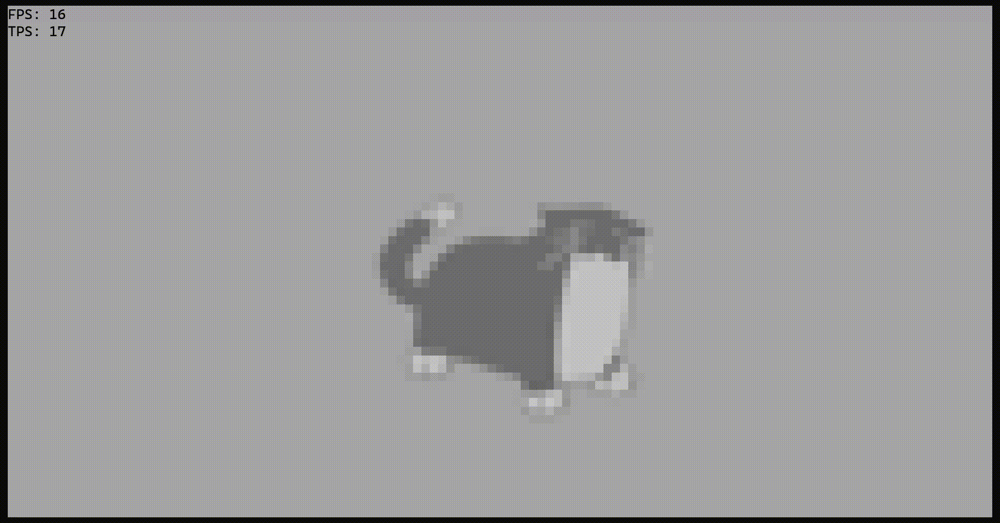
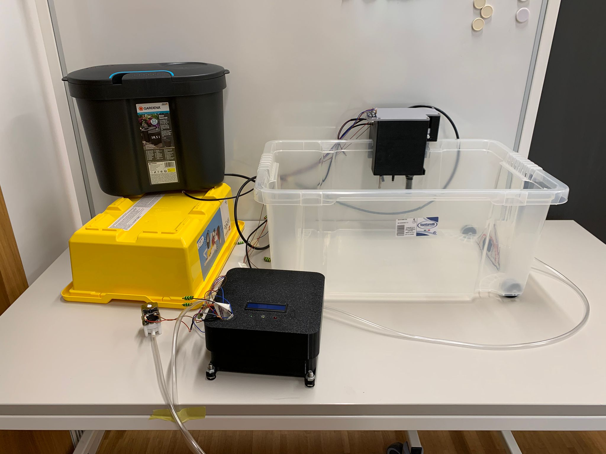
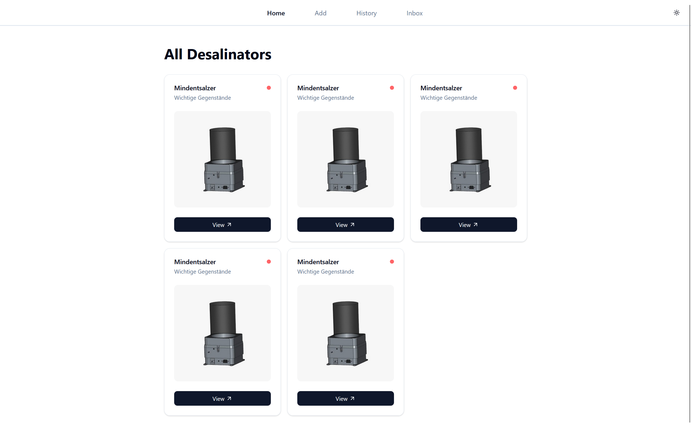
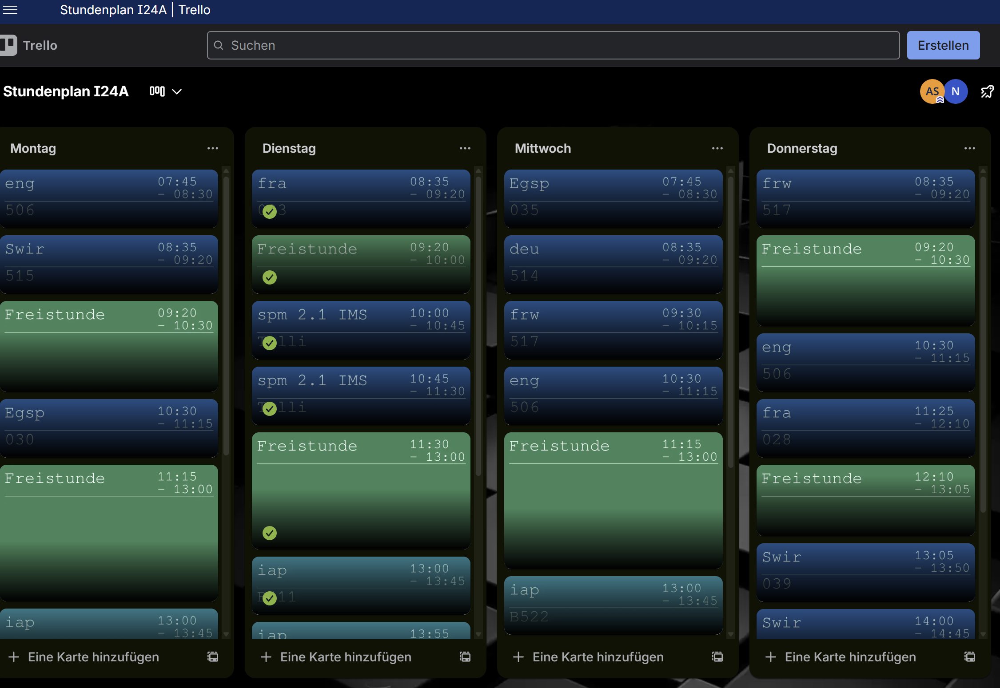
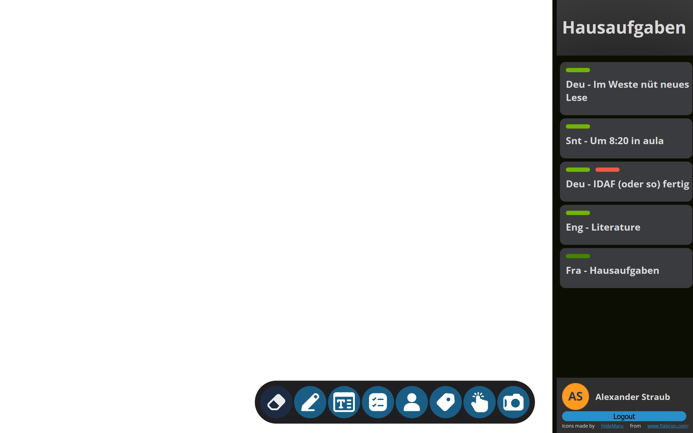
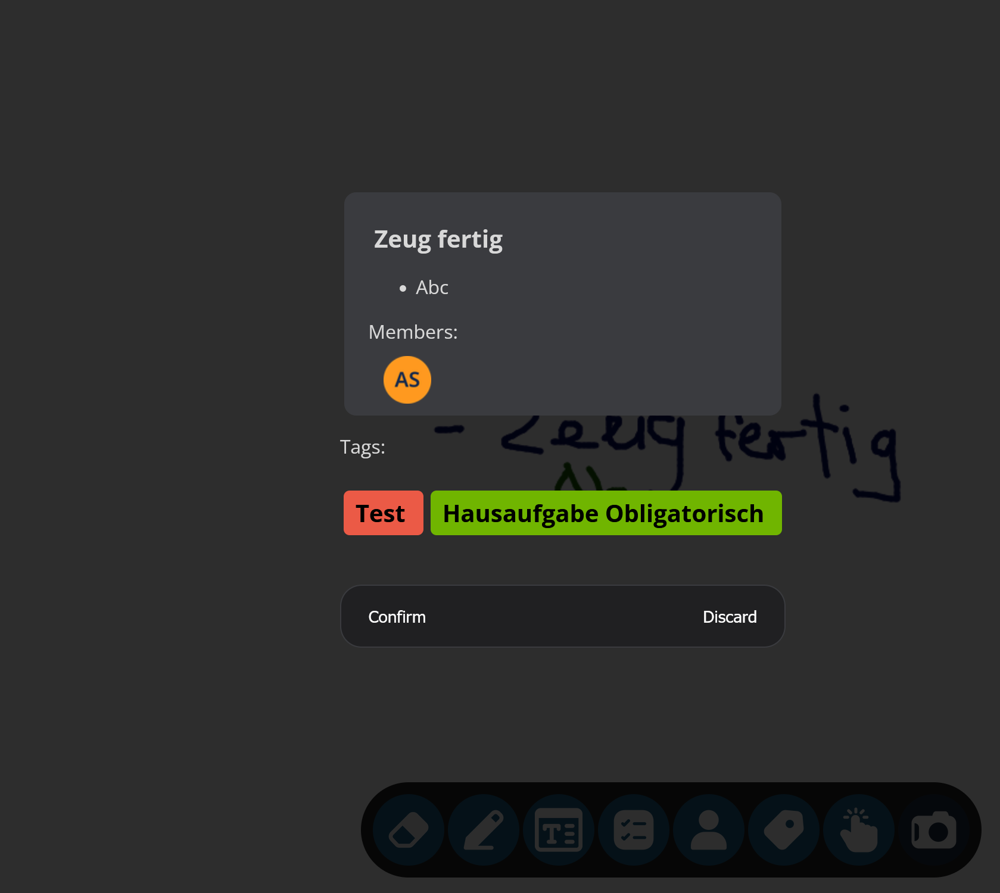
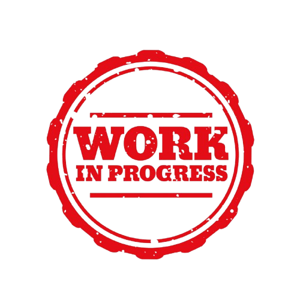

SPainter/NewPainter
SPainter ist ein pixelbaiserter Grafikrenderer der in der Konsole arbeitet. Es ist eines meiner längsten aktiven Projekte die mich seit dem 1. Jahr begleiten. Mittlerweile kam es von einem simplen Tool zum anzeigen von Formen zu einem wahren Grafikengine welches sogar Bilder in einer Auflösung von 120*60px darstellen kann.
github repo





Mindentsalzer
Als aktives Teammitglied des Robotikteams mindfactory ist der mindentsalzer das Resultat der diesjährigen Forschungsarbeit. Für diesen arbeitete ich am Code der Maschine selbst sowie den Code für das Backend. Für weitere Informationen siehe unsere offizielle Webseite:
mindfactory
Auto-Trello
Da es mir zu langweilig und kompliziert war mich mal um mal im Schul-Netz einzuloggen um meinen Stundenplan zu sehen entschied ich mich dafür eine aufgabe die sonst 5 sekunden ging in 5 Tagen zu automatisieren. Für dies richtete ich mit Python eine Automation ein welche einmal pro Tag läuft und den Stundenplan vom Schul-Netz holt und in ein Board der Planungssoftware Trello (welches ich auch für Hausaufgaben und Tests verwende) einträgt

Whiteboard App
Für eine meiner Lernperioden (gegebene Zeit der Schule für das Arbeiten an inf projekten) entschied ich mich eine Web-App zu machen, welche es mir erlaubt mittels Handschrift auf ein virtuelles Whiteboard zu schreiben und dann der Inhalt desjenigen mittels einer OCR api in saubere Trello Karten einzulesen.
whiteboard



Spotifake (In Progress)
Momentan arbeite ich gerade an "Spotifake". Es ist eine simple Musik-Webapp welche es mir erlaubt Musik zu hören, ohne abhängig von externen Providern wie Spotify oder Apple Music zu sein.
respawn notes

Home